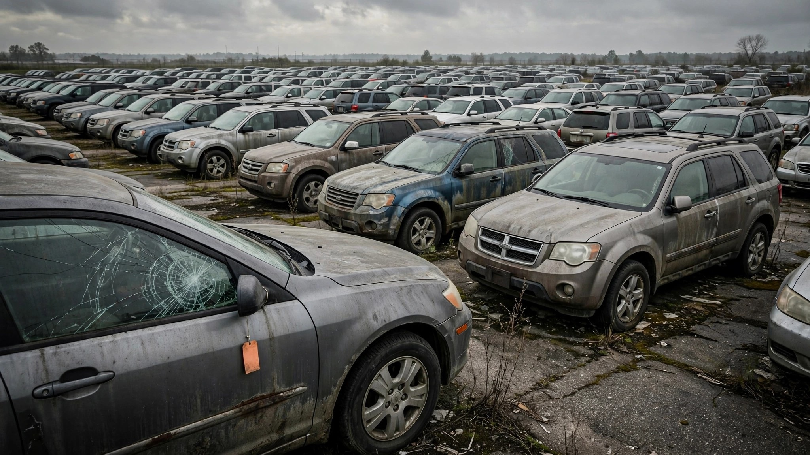

The 2013 Model Year Is the Deadliest Vintage Still on American Roads

Ford's VP of quality, Josh Levine, said something unusually honest this week: the company "still has challenges with vehicles that were designed in the 2013 to 2020 time frame."[1] He meant recalls. But FARS data tells a grimmer version of the same confession, and it doesn't stop at Ford. Across all makes and all models, the 2013 model year has accumulated 6,903 deaths in FARS — more than any other vintage still filling American driveways.
That number sits at the top of a curve that should bother anyone shopping for a used car: model year 2012 logged 6,569 deaths, and model year 2014 hit 6,668. Then the count drops: 6,046 for 2016, 5,517 for 2017, and by model year 2020 it's down to 2,873. The decline is steep and it tracks almost perfectly with the adoption timeline for automatic emergency braking, the single most consequential safety technology since the seat belt. A 2013 vehicle was built in a dead zone — the first full model year after electronic stability control became mandatory, and three years before the twenty largest automakers even agreed to make AEB standard voluntarily.[2]
Think about what a 2013 car doesn't have: no automatic emergency braking, no lane departure warning, no blind-spot monitoring or rear cross-traffic alert, no adaptive cruise control with stop-and-go capability. It was built before IIHS updated its side crash test to use a heavier barrier in 2021, before the institute put a dummy in the rear seat for frontal crash tests in 2024, and before NHTSA even proposed its AEB mandate. The backup camera, which didn't become legally required until May 2018, was optional on most 2013 models and missing entirely on many base trims. ESC was there, but only barely — Federal Motor Vehicle Safety Standard 126 took full effect for model year 2012, making 2013 the first vintage where every single new car had electronic stability control, though mandatory didn't mean optimized. First-generation ESC calibrations were conservative enough that IIHS still found measurable rollover-prevention gaps compared to systems tuned just a few years later.[3]
The 2013 vintage is also at peak exposure right now. These vehicles sold in enormous volumes during the post-recession rebound and are twelve years old — old enough that depreciation has pushed them deep into the used market, young enough that millions are still daily drivers. They occupy the worst possible square on the age-versus-technology grid: cheap to buy, expensive to crash.
The gap between a 2013 and a 2023 model of the same vehicle is arguably the largest generational safety leap in automotive history. NHTSA estimates that AEB alone, once mandated for all light vehicles in 2029, will prevent at least 360 deaths and 24,000 injuries every year.[4] But those numbers assume universal adoption. Right now, the American fleet averages 12.6 years old — meaning the typical car on the road was built around 2013 or 2014, right in the dead zone. The safety benefit is coming, but it hasn't arrived yet for the cars people are actually driving.
A caveat, because this matters and ignoring it would be dishonest: the FARS model year data covers the 2014–2023 window, and 2013 vehicles were on the road for all ten of those years. A 2020 model year vehicle was present for only three or four. That exposure difference inflates the raw count for older vintages. But the counterargument makes the consumer case stronger, not weaker. The problem isn't that 2013 vehicles are freakishly dangerous per mile — it's that they're everywhere, they lack the technology that newer vehicles use to avoid crashes entirely, and nobody is coming to retrofit them because no recall in the world fixes a feature that was never installed.
If you're driving a 2012–2015 model year vehicle, three things are worth doing today. First, check your VIN at nhtsa.gov/recalls, because these vintages carry some of the highest unfixed recall rates in the active fleet. Second, look up your exact vehicle at iihs.org/ratings to understand how it actually performed in crash testing — not the star rating from the window sticker, but the per-test breakdown that shows where the structure held and where it folded under load. Third, be honest about what the vehicle lacks, because a 2013 Altima and a 2023 Altima share a name and roughly a shape but not a safety envelope, and the distance between them is measured in funerals: three hundred and seven people died in model year 2013 Nissan Altimas during the FARS decade, while the 2023 vintage with standard AEB and reinforced structure logged thirteen.
Sources & References
- USA Today, “Ford touts quality, but recalls nearly 1 million vehicles in a week,” July 27, 2026. usatoday.com
- IIHS, “Most new vehicles will have automatic emergency braking by September 2022,” tracking the 2016 voluntary commitment. iihs.org
- IIHS, “Life-saving benefits of ESC continue to accrue,” 2011. iihs.org
- NHTSA, FMVSS 127 Automatic Emergency Braking Final Rule, April 2024; estimated 360 lives saved and 24,000 injuries prevented annually. nhtsa.gov
- NHTSA, Fatality Analysis Reporting System (FARS), 2014–2023 bulk data. nhtsa.gov
- S&P Global Mobility, average vehicle age in operation: 12.6 years (2024).